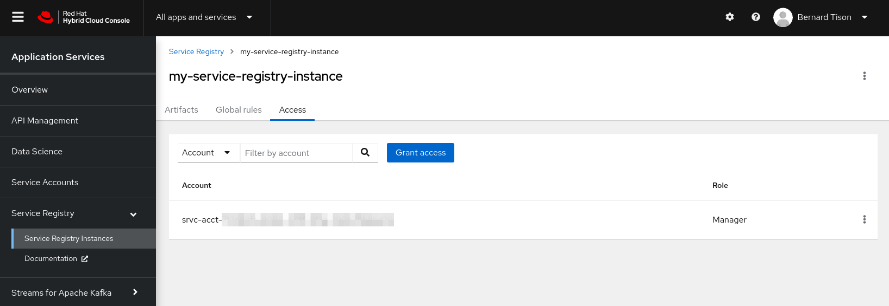
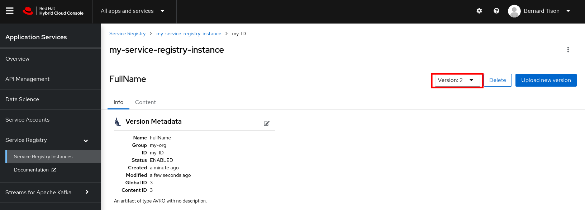

Create a Service Registry instance
OpenShift Service Registry is a managed cloud service which provides you with an instance of a schema registry, where you can store and manage different kind of schemas, including OpenAPI spec documents and Avro and Protobuf schemas.
A Service Registry instance is an isolated virtual tenant in a multi-tenanted deployment with its own unique instance URL and configuration to connect to producer and consumer applications.
Create an instance of OpenShift Service Registry
-
Go to console.redhat.com and log in with your Red Hat account.
-
On the console.redhat.com landing page, select Application Services from the menu on the left.
-
On the Application Services landing page, select Service Registry → Service Registry instances.

-
On the Service Registry overview page, click the Create Service Registry instance button. Enter a unique name like
my-registry-service-instanceand click Create to start the creation process for your Service Registry instance. -
The new Service Registry instance is listed in the instances table. After a couple of seconds, your instance should be marked as ready.

-
When the instance Status is Ready, you can start using this Service Registry instance. You can use the Options icon (three vertical dots) to view, connect to, or delete the instance as needed.
-
Click on the Options icon, and select Connection. This opens a pop-up window with the connection information to your service registry instance.

OpenShift Service Registry provides 3 API’s to connect applications to the service:
-
Core Registry API is the most powerful and works with Apicurio client libraries.
-
Schema Registry compatibility API provides compatibility with the Confluent Schema Registry API.
-
CNCF Schema Registry API provides compatibility with the CNCF specification.
-
-
Copy the Core Registry API URL to a secure location. This is the server endpoint that you’ll need later in this workshop to connect your applications to this Service Registry instance.
Set Permissions for a Service Account
Just like Streams for Apache Kafka, OpenShift Service Registry uses service accounts and role-based access to manage interactions with the Service Registry instance. You created the service account you created in the previous lab to set the appropriate level of access to the Service Registry instance.
-
In the Service Registry Instances page of the web console, click the name of the Service Registry instance that you want the service account to access.
-
Click the Access tab to view the accounts and roles already assigned for this instance.
-
Click Grant access to assign a role to the service account.
-
In the Account field, select or enter the service account name that you want to assign the role to.
-
Select the Role that you want to assign to the account, for example, Manager for read and write access to this instance.

-
Click Save to finish.
-
The new role is listed in the Access Overview page. On this page you can filter the roles by account or role name.

Upload an artifact to Service Registry
After you create a Service Registry instance, you can upload schema or API content to the instance. There are different ways to do so, through the Service Registry Rest API, or through the UI.
The following example shows uploading an Apache Avro schema for serializing and deserializing Kafka messages in client applications.
-
In the Service Registry instances page of the web console, select the Service Registry instance that you want to upload a schema to.
-
Click Upload artifact and complete the form to define the schema details:
-
Group: Enter an optional unique group name such as
my-orgto organize the artifact in a named collection. Each group contains a logically related set of schemas or API designs, typically managed by a single entity, belonging to a particular application or organization.Specifying a group is optional when using the web console, and a default group is automatically created. -
ID: Enter an optional unique ID for this artifact such as
my-ID. If you do not specify a unique artifact ID, Service Registry generates one automatically as a UUID. -
Type: Use the default Auto-Detect setting to automatically detect the artifact type, or select the artifact type from the drop-down, for example, Avro Schema or OpenAPI.
-
Artifact: Drag and drop or click Browse to upload a file. For this example, copy and paste the following simple Avro schema:
{ "type": "record", "namespace": "com.example", "name": "FullName", "fields": [ { "name": "first", "type": "string" }, { "name": "last", "type": "string" } ]}
-
-
Click Upload to complete the operation and display the new artifact details:
-
Info: Displays the artifact name, group, description, lifecycle status, when created, and last modified.
-
Content: Displays a read-only view of the full artifact content.
-
Documentation: (OpenAPI only): Displays automatically-generated REST API documentation.
-
Content Rules: Displays artifact content rules that you can enable and configure. You can configure a Validity Rule or Compatibility Rule by selecting the appropriate rule configuration from the drop-down. For details on supported rules, see the Red Hat OpenShift Service Registry user documentation.
-
You can now use this schema to serialize and deserialize messages from Kafka client applications.
On the right of the screen, you can click Upload new version to add a new artifact version.
You can click Delete to delete an artifact as needed.
| Deleting an artifact deletes the artifact and all of its versions, and cannot be undone. Artifact versions are immutable and cannot be deleted individually. |
Schema version management in Service Registry
Schemas can evolve over time, and new versions of an artefact can be uploaded to OpenShift Service Registry. Within Service Registry you can define rules to manage the evolution of the artefact. For example you can define rules that govern the backward compatibility of a schema when a new version is uploaded. These rules can be defined per artifact or on a global level.
-
Open the
FullNameartifact in your instance of Service Registry. -
Click the Enable button next to Validity rule in the Content Rules section.

Select Full in the drop-down box.
-
Click the Enable button next to Compatibility rule in the Content Rules section. Select Backwards in the drop-down box.

-
Click Upload new version to upload a new version of the Avro schema.
The new version contains a new mandatory field, which breaks the backwards compatibility with the existing version. -
Paste the following contents in the Upload Artifact Version pop-up window:
{ "type": "record", "namespace": "com.example", "name": "FullName", "fields": [ { "name": "first", "type": "string" }, { "name": "middle", "type": "string" }, { "name": "last", "type": "string" } ]} -
Click Upload to upload the new version.
-
Note that a Invalid Content popup window is shown, and the new version is not accepted. Click Close to close the error window.

-
In order to fix the error, the new
middlefield must be made optional. Click Upload new version and paste the following contents in the Upload Artifact Version pop-up window:{ "type": "record", "namespace": "com.example", "name": "FullName", "fields": [ { "name": "first", "type": "string" }, { "name": "middle", "type": ["null", "string"], "default": null }, { "name": "last", "type": "string" } ]}Notice that the type of the
middlefield is nownullorstring, withnullas default value. This is the Avro way to mark a field as optional. -
Click Upload to upload the new version.
-
The new version does not break the backwards compatibility rule, and is accepted.
